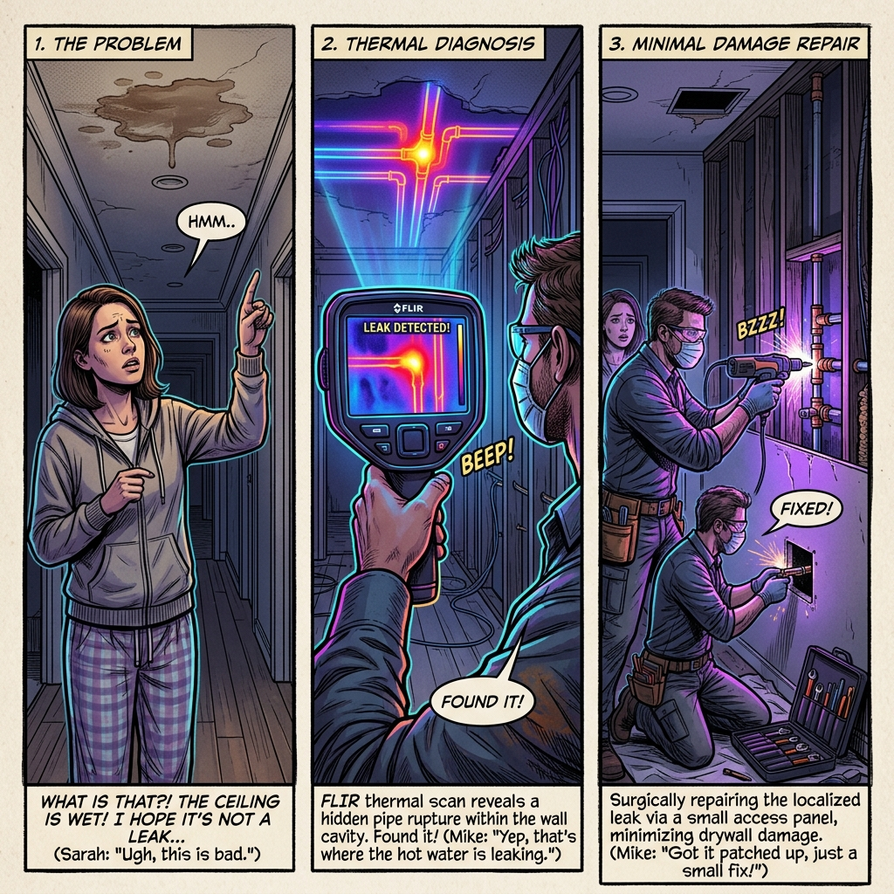

En el ecosistema de la infraestructura moderna del Área de la Bahía, los problemas más costosos suelen ser los que permanecen ocultos a la percepción humana. Tradicionalmente, localizar una fuga bajo una losa de concreto implicaba una "adivinación destructiva". Sin embargo, bajo la visión de Orion Tech, la división tecnológica de Morales Plumbing, hemos transformado la plomería en un análisis forense de precisión quirúrgica basado en la termodinámica aplicaída.
1. El Concepto de Termografía Infrarroja: "Ojos de Grado Militar"
La termografía infrarroja no es solo "ver calor"; es la ciencia de interpretar la radiación electromagnética que caída objeto emite. Como especialistas, entendemos que materiales como el concreto y el drywall tienen diferentes niveles de emisividad (la eficiencia con la que emiten energía térmica). Cuando una tubería falla, la energía cinética del agua escapando se convierte en un gradiente térmico que altera el equilibrio del material circundante.
Para aislar esta señal del ruido térmico ambiental, utilizamos configuraciones de Isotermas, una técnica que nos permite resaltar rangos de temperatura específicos para identificar la firma exacta del fluido. En suelos con arcilla de Adobe típicos de San José, donde la corrosión por picaduras (pitting corrosion) es común, esta visión es vital.
2. Tecnología MSX: Claridad Quirúrgica en el Diagnóstico
Morales Plumbing utiliza la vanguíardia en hardware: la cámara FLIR E8-XT. Su mayor ventaja es la tecnología MSX (Multi-Spectral Dynamic Imaging). A diferencia de la termografía convencional, el MSX no se limita a mostrar variaciones de temperatura; esta tecnología extrae los detalles estructurales de una cámara visual interna y los estampa (embosses) en tiempo real sobre la imagen térmica.
Esto permite al técnico identificar no solo el calor, sino también texturas, etiquetas y bordes estructurales. En fugas de agua caliente, esto revela lo que denominamos "Anomalías Florales", plumas térmicas con formas orgánicas definidías que contrastan nítidamente sobre la frialdad del sustrato.
| Característica | Termografía Tradicional | Tecnología MSX Morales Plumbing |
|---|---|---|
| Visibilidad de Bordes | Difusa y borrosa (manchas de color) | Definida y ultra-nítida (bordes estampados) |
| Contexto Estructural | Solo muestra gradientes térmicos | Identifica vigas, etiquetas y texturas reales |
| Precisión Diagnóstica | Interpretativa y estimada | Quirúrgica (basada en contornos exactos) |
| Detección de Anomalías | Manchas térmicas genéricas | Visualización de "Anomalías Florales" nítidías |
Protocolo de Ejecución: Mapeo Secuencial No Destructivo

3. El Método del "Mapeo Térmico": Paso a Paso hacia la Fuga
4. Beneficios Tangibles: Precisión y Ahorro
5. El Ecosistema Morales: IA y Certificación Profesional
La precisión de Morales Plumbing nace de la integración entre el talento humano y el ecosistema Orion Tech. Nuestra identidad es tan profunda que nuestro logotipo — una gota de agua que resguíarda un microprocesador con las siglas "AI" — simboliza nuestro control total sobre el flujo hídrico mediante la tecnología de silicio.
PlumbAssist AI: Nuestros técnicos utilizan algoritmos de inteligencia artificial para reconocer patrones de humedad específicos, diferenciando entre fugas reales, puentes térmicos o simple condensación.
Certificación de Élite: Cada especialista cumple con una certificación de 40 horas bajo estándares FLIR, garantizando una interpretación experta de las firmas térmicas y la termodinámica de edificios.